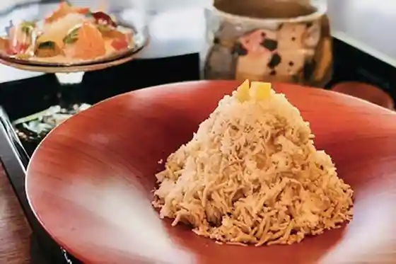
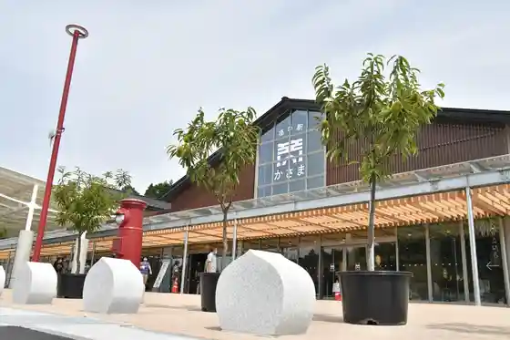
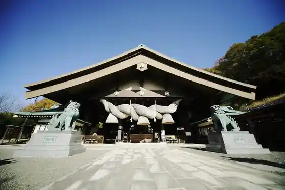
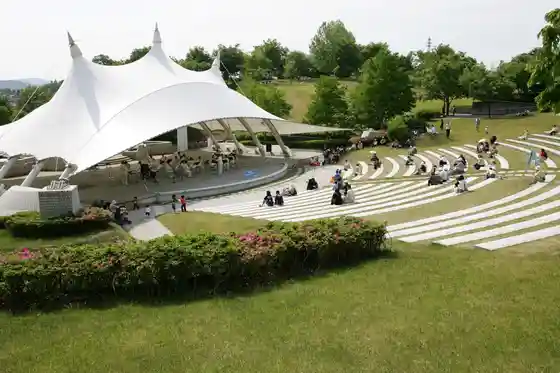

Kuri no Ie
Kasama, Ibaraki · 0299-57-2728 · Official / source link

Roadside Station Kasama
Kasama, Ibaraki · 0296-71-5355 · Official / source link

Hitachi Kuni Izumotaisha
Kasama, Ibaraki · 0296-74-3000 · Official / source link

Kasama Inari Shrine
Kasama, Ibaraki · 0296-73-0001 · Official / source link
Kasama Geijutsu no Mori Park
Kasama, Ibaraki · 0296-72-1990 · Official / source link

Kyu Tsukuba Kaigun Kokutai Shireibu Chosha
Kasama, Ibaraki · 0296-73-5777 · Official / source link
Kasama Kogei no Oka
Kasama, Ibaraki · 0296-70-1313 · Official / source link
Harukaze Banri So
Kasama, Ibaraki · 0296-72-0958 · Official / source link
Atago Yama
Kasama, Ibaraki · Official / source link
Kasama Tsutsuji Park
Kasama, Ibaraki · 0296-72-9222 · Official / source link
Kasama Ku Line Garuten
Kasama, Ibaraki · 0296-70-3011 · Official / source link
Kasama Rekishi Koryu Kan Izutsuya
Kasama, Ibaraki · 0296-71-8118 · Official / source link
Sudo Honke
Kasama, Ibaraki · 0296-77-0152 · Official / source link
Sa Hakusan
Kasama, Ibaraki · 0296-72-9222 · Official / source link
Mori no Ishigama Pan Ya San
Kasama, Ibaraki · 0296-74-0888 · Official / source link
Ibarakiken Togei Art Museum
Kasama, Ibaraki · 0296-70-0011 · Official / source link
Machi no Eki Kasama Yado (Kyu Kasama Mingei Village)
Kasama, Ibaraki · 0296-71-8077 · Official / source link
Yuzaki Kuri Sono
Kasama, Ibaraki · 0296-77-1341 · Official / source link
Otori Dai In
Kasama, Ibaraki · 0296-72-0024 · Official / source link
Kirara Kan
Kasama, Ibaraki · Official / source link
Iwama no Kuri Ya Oda Ki Shoten
Kasama, Ibaraki · 0299-45-2638 · Official / source link
Sasame Sobe Shoten
Kasama, Ibaraki · 0296-72-0021 · Official / source link
Kitayama Park
Kasama, Ibaraki · 0296-78-3911 · Official / source link
Kasama Yaki Kamamoto Seito Fukuda
Kasama, Ibaraki · 0296-72-0670 · Official / source link
Murasaki Park Kasama
Kasama, Ibaraki · 0296-71-9911 · Official / source link
Ishi Hiki Soba Ie Takashi Iori
Kasama, Ibaraki · 0296-72-5676 · Official / source link
ETOWA KASAMA
Kasama, Ibaraki · 0299-56-7075 · Official / source link
Resutoran Mon Rapan
Kasama, Ibaraki · 0296-73-0020 · Official / source link
Ito Kashi Mise
Kasama, Ibaraki · 0299-45-2152 · Official / source link
Nihonshu Bunka Nagaya Iso Kura
Kasama, Ibaraki · 0296-71-5221 · Official / source link
Soba Tokoro I Gawa
Kasama, Ibaraki · 0296-74-4157 · Official / source link
Tofu Chaya Sa Hakusan no Tofu Ya
Kasama, Ibaraki · 0296-72-3072 · Official / source link
Ware Kuni Yama (Wagakunisan)
Kasama, Ibaraki · Official / source link
Ni Tsu Ki
Kasama, Ibaraki · 0296-72-0037 · Official / source link
Kasama Inari Art Museum
Kasama, Ibaraki · 0296-73-0001 · Official / source link
O Shokuji Tokoro Purieru
Kasama, Ibaraki · 0296-74-2948 · Official / source link
Tanuki Iori Tsutaya
Kasama, Ibaraki · 0296-72-0055 · Official / source link
Ineda Zembo Sainen Tera (Ineda Gobo)
Kasama, Ibaraki · 0296-74-2042 · Official / source link
Tsu no Kuni Ya
Kasama, Ibaraki · 0296-72-0061 · Official / source link
So Ishi
Kasama, Ibaraki · 0296-74-2112 · Official / source link
Inaka no Jikka
Kasama, Ibaraki · 0296-78-0779 · Official / source link
Ishi no Hyakunen Kan
Kasama, Ibaraki · 0296-74-5114 · Official / source link
Mone no Ie
Kasama, Ibaraki · 080-6735-1316 · Official / source link
Auberge de Y
Kasama, Ibaraki · 090-4846-0111 · Official / source link
Autumn Leaves Tei
Kasama, Ibaraki · 0296-72-3942 · Official / source link
Eko Farm Hoshiyama
Kasama, Ibaraki · 0296-72-2919 · Official / source link
Kasama Nichido Art Museum
Kasama, Ibaraki · 0296-72-2160 · Official / source link
Kasama Yaki Kamamoto Yamasaki to En
Kasama, Ibaraki · 0296-72-6865 · Official / source link
Kimuraya
Kasama, Ibaraki · 0296-72-0268 · Official / source link
Inari Workshop ISAGO
Kasama, Ibaraki · 0296-78-4848 · Official / source link
Sa Hakusan Joshi Park
Kasama, Ibaraki · 0296-72-1111 · Official / source link
zakka&café LE MIDI (Ra Midi)
Kasama, Ibaraki · 0296-73-0430 · Official / source link
Ryo Gan Tera
Kasama, Ibaraki · 0296-72-9222 · Official / source link
Glass Gallery SUMITO
Kasama, Ibaraki · Official / source link
Iso Kura Shuzo
Kasama, Ibaraki · 0296-71-5221 · Official / source link
Komatsu Kan
Kasama, Ibaraki · 0296-72-0668 · Official / source link
Yu Yu Reigaku Take Mizu Tei (Yuyureiraku Chikusuitei)
Kasama, Ibaraki · 0296-77-0611 · Official / source link
Ko Minka Kurosawa Ei Yuki Kyoku
Kasama, Ibaraki · 070-3964-0735 · Official / source link
Yamazato no Atoriehausu Yume Taku Kaori
Kasama, Ibaraki · 0296-72-4197 · Official / source link
Kappo Ten Ho (Tenyoshi)
Kasama, Ibaraki · 0296-72-0148 · Official / source link
Mori no Naka no Ritoriito
Kasama, Ibaraki · 0296-72-9245 · Official / source link
Monzen House
Kasama, Ibaraki · 090-5765-0544 · Official / source link
Rairakku
Kasama, Ibaraki · 0296-72-4913 · Official / source link